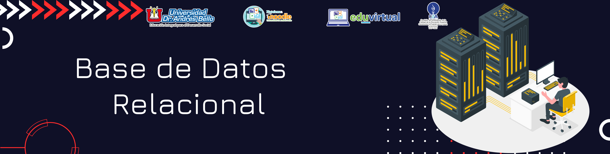

Bases de Datos Relacionales
2. Base de Dato Relacional
Contenido
Partiendo del concepto que, una base de datos relacional es una recopilación de elementos de datos con relaciones predefinidas entre ellos y que estos elementos se organizan como un conjunto de tablas con columnas y filas, se puede inferir que el modelo relacional en las bases de datos es una forma intuitiva y directa de representar datos sin necesidad de jerarquizarlos. En esencia una base de datos relacional es un conjunto de tablas, donde estas se utilizan para guardar información sobre los objetos que se van a representar en la base de datos. Cada columna de una tabla guarda un determinado tipo de datos y un campo almacena el valor real de un atributo. Las filas de la tabla representan una recopilación de valores relacionados de un objeto o una entidad. Cada fila de una tabla podría marcarse con un identificador único denominado clave principal, mientras que filas de varias tablas pueden relacionarse con claves extranjeras. El acceso a los datos puede obtenerse de muchas formas distintas sin reorganizar las propias tablas de la base de datos.
Características principales de las bases de datos relacionales
Característica 1
Evitar la duplicidad de registros
Característica 2
Integridad referencial de los datos, es decir que, si se elimina uno de los registros, la integridad de los registros restantes no será afectada
Característica 3
Acceso sencillo a los datos, gracias a las claves o llaves se puede acceder de forma sencilla a la información y recuperarla en cualquier momento
Como bien se ha mencionado las tablas forman la estructura de las bases de datos y estas a su vez cuentan con elementos importantes que hacen posible las relaciones entre tablas. Para ello es importante conocer que habrá tablas padres e hijas. Y que una tabla padre puede tener una o varias tablas hijas.
Obra publicada con Licencia Creative Commons Reconocimiento Compartir igual 4.0